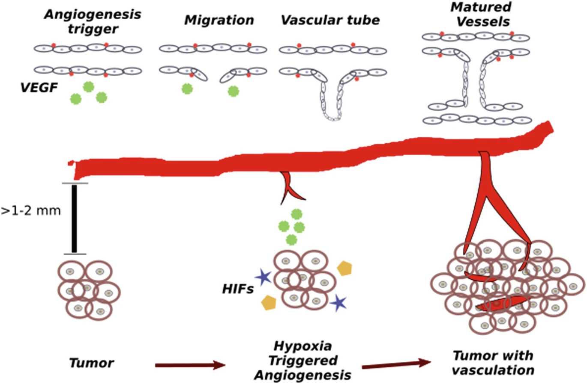
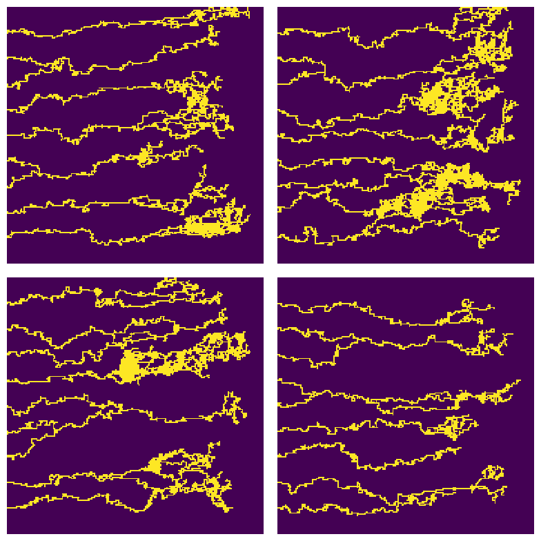
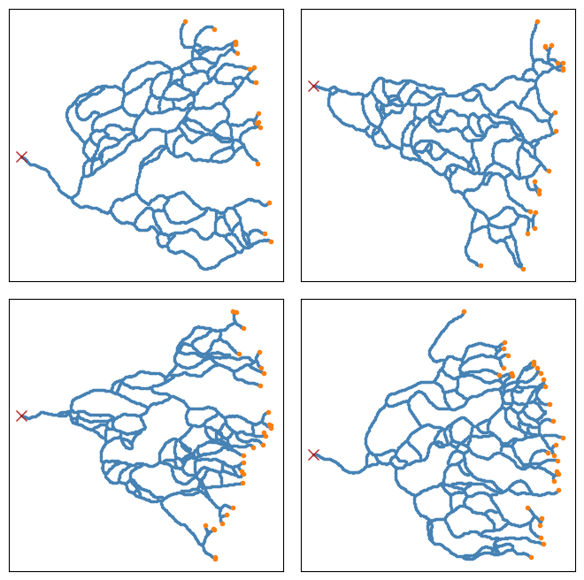
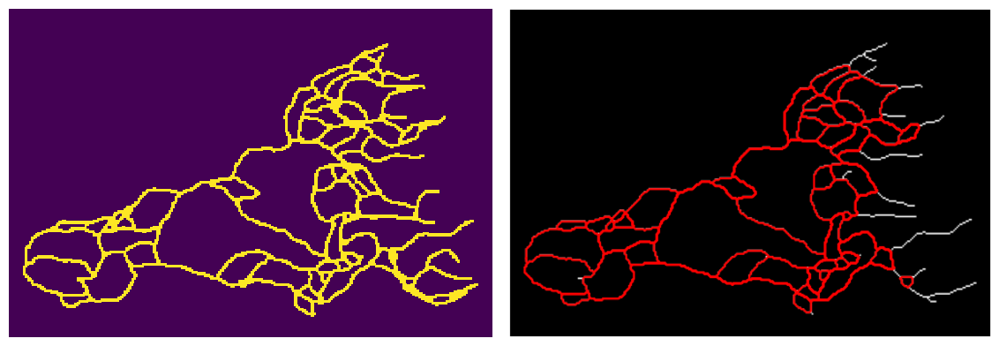
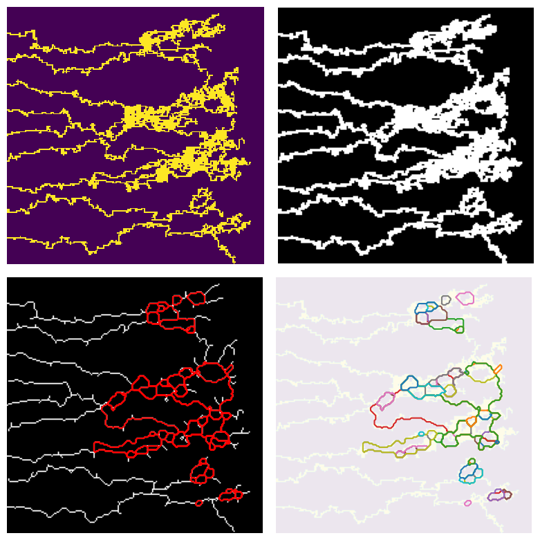
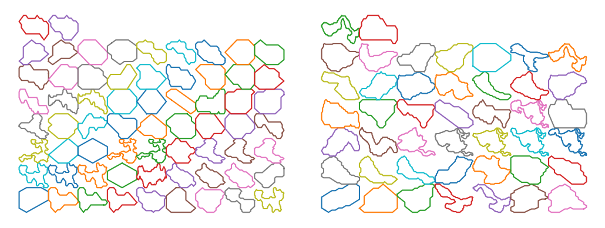
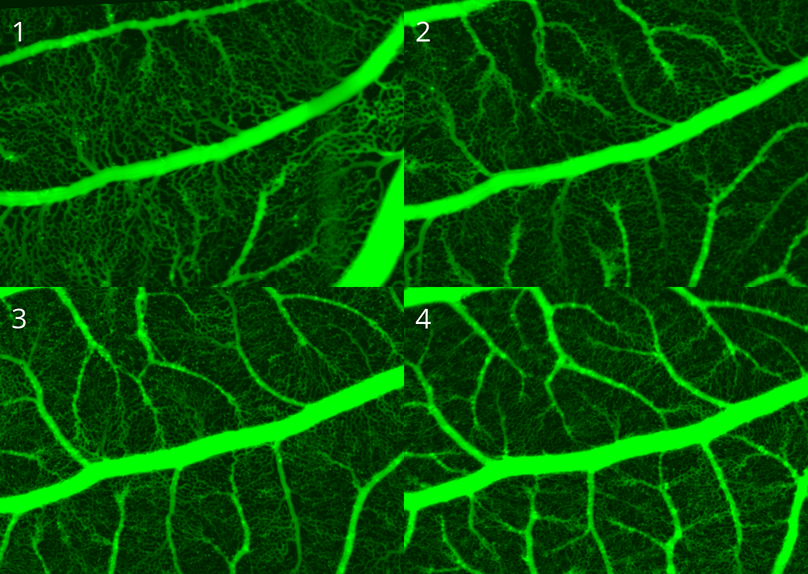
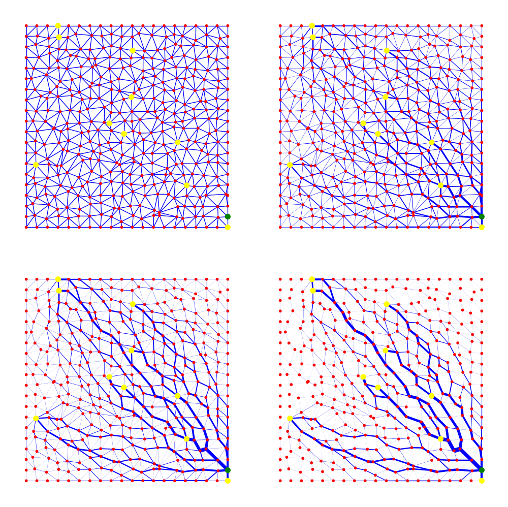
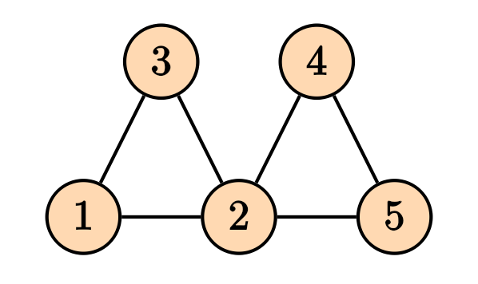
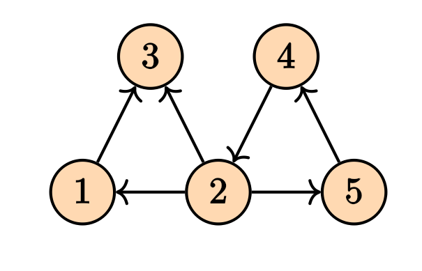

Abstract
I have introduced some basic concepts of micro-circulation and the vascular networks and how they get created (angiogenesis) in health and disease. Then I discuss some angiogenesis models (Anderson-Chaplain as well as BARW) and use the tools of the geomstats to analyze the loopy structure in these networks. I explained the characteristics of the loopy structures in the networks in terms of the parameters of the model. Furthermore, I consider the time evolution of the graphs created by these networks and how the characterization of the loopy structures change through time in these networks.
Introduction
Vascular network in animals is a complex network of vessels to carry the nutrients to and wastes out from the tissue. Main parts of the blood circulation system is determined during the embryo development (like the location and characterization of the main veins and arteries). However, the exact positioning and hierarchy of the capillary networks is not predetermined genetically, but is an adaptive process. A tissue under hypoxia (experiencing low oxygen) will initiate biochemical signals to recruit new vessels. One of the main signaling molecules is the tumor angiogenic factor (TAF) and as the name suggests it is highly expressed by tumor under oxygen stress (hypoxia). The TAF molecules will diffuse in the interstitial space. Upon interaction with pre-existing vessels, they will digest through the basal membrane of the pre-existing vessels and will activate the endothelial cells (that are lining the inner part lumen of all vessels in the body). The endothelial cells activated by TAF will turn into tip cells which will move up in the gradient of TAF, and they will make branches of vessels which will grow as the tip cells are moving. See figure below for details.

There are also other factors important in the process of tip cell movement among which is the concentration of fibronectin in the environment. Fibronectin is a protein that acts like a glue and attaches the cells to intracellular matrix, which mediates the cell movement. In the section related to the angiogenesis models we will discuss how this protein is considered in the models.
Anderson-Chaplain Model of Angiogenesis
Anderson-Chaplain model of angiogenesis describes the angiogenesis process considering the factors like TAF and fibronectin. This model contains three variables \(\newcommand{\R}{\mathbb{R}}\) \(\newcommand{\abs}[1]{|#1|}\)
- \(n = n(X,t): \Omega \times \R \to \R\): the endothelial-cell density (per unit area).
- \(c = c(X,t): \Omega \times \R \to \R\): the tumor angiogenic factor (TAF) concentration (nmol per unit area).
- \(f = f(X,t): \Omega \times \R \to \R\): the fibronectin concentration (nmol per unit area).
and the time evolution is governed by the following system of PDEs
\[\begin{align*} &\frac{\partial n}{\partial t} = D_n\nabla^2 n - \nabla\cdot(\chi n\nabla c) - \nabla\cdot(\rho n \nabla f), \\ &\frac{\partial c}{\partial t} = -\lambda n c, \\ &\frac{\partial f}{\partial t} = \omega n - \mu n f, \end{align*}\]
where \(D_n\) is a diffusion constant taking the random movement of tip cells into account, \(\chi, \rho\) reflects the strength of the chemotaxis of tip cells due to the gradient of TAF, and fibronectin respectively. Furthermore, \(\lambda, \mu\) is the rate at which tip cells consume the TAF and fibronectin respectively, and \(\omega\) denotes the production of fibronectin by the tip cells. Note that we assume at the start of the angiogenesis process, we have a steady state distribution of fibronectin and TAF and is not diffusing. This assumption is not entirely true and can be enhanced.
Here in this report, we will be using the discrete and stochastic variation of this model. For more detail see (Anderson and Chaplain 1998). See figure below for some example outputs of the model.

Branching-Annihilating Random Walker
The Anderson-Chaplain model of angiogenesis is not the only formulation of this phenomena. A popular alternative formulation is using the notion of branching annihilating random walkers for the to explain the branching morphogenesis of vascular networks. A very detailed discussion on this formulation can be found in Uçar et al. (2021). This formulation has been also successful to models a vast variety of tip-driven morphogenesis in mammary-glands, prostate, kidney (Hannezo et al. 2017), lymphatic system (Uçar et al. 2023), neural branching (Uçar et al. 2021), and etc.
The core idea behind this formulation is to assume that the tip cells undergo a branching-annihilating random walk, i.e. they move randomly in the space, turn into pairs randomly (branching), and as they move they produce new cells (stalk) behind their trails, and finally annihilate if they encounter any of the stalk cells. See figure below:

Data Pre-Processing
The data generated by the Anderson-Chaplain model or BARW model are typically matrices (i.e. images) (however, there are certain ways to construct a graph representing the final structure during the simulation). To be able to do any form of computation with the simulated data (like finding the loops, etc) it is convenient to turn the images into a graph.
For the outputs of the Anderson-Chaplain model , since the vessels are more crowded at some regions, we first did a dilation followed by a erosion (using OpenCV) to enhance the images for further processing. We then applied a connectivity-8 kernel to the enhanced images to find the nodes, and finally used the processes information to turn the vascular network in the image into a graph in python (using NetworkX library). See figure below for more details. We also applied the same processing pipeline on the data generated by the BARW model which is shown in the following figure


The new data structure that we store the synthetic data (i.e. as graphs in NetworkX) gives us a tremendous flexibility in working and analyzing the shape of each individual loops. See the following figure for further details on this. This data structure will also come in handy when we study the time evolution of the graphs.

Study Plan: In this section we will use the notions of Kendall shape space to study the structure of the loops that appear under different parameters of the model.
Time Evolution Of Networks
Vascular networks are not static structure, but rather the evolve in time in response to the changing metabolic demand of the underlying tissue, as well as the metabolic cost of the network itself, and the overall energy required to pump the fluid through the network (See Pries and Secomb (2014) for more discussion). To put this in different words, the role of vascular networks is to deliver nutrients to the tissue and remove the wastes. To do this, it needs to have a space filling configuration with lots of branches. However, due to the Poiseuille law for the flow of fluids in a tube, the power needed to pump the fluid through the tube scales with \(r^{-4}\) where \(r\) is the radius of the tube. I.e. smaller vessel segments needs a huge power to pump the blood through them. Thus have a massively branched structure is not an optimal solution. On the other hand, the vascular network consists of cells which requires maintenance as well. Thus the optimized vascular network should have a low volume as well. Because of these dynamics in action, in the angiogenesis process first a mesh of new blood vessels form which later evolve to a more ordered and hierarchical structure in a self-organization process.

To determine the time evolution of the vascular network we first need to formulate the problem in an appropriate way. First, we represent a given vascular network with a multi-weighted graph \(G=(\mathcal{V},\mathcal{E})\) where \(V\) is the set of vertices and \(E\) is the edge set. We define the pressure \(\mathbf{P}\) on the nodes, the flow $ $ on the edges, and let \(C_{i,j}, L_{i,j}\) denote the conductivity of an edge, and \(L_{i,j}\) denote the length of the same edge. Given the source and sink terms on the nodes $ $, the flow in the edges can be determined by \[\mathcal{L} \mathbf{P} = \mathbf{q},\] where \(\mathcal{L}\) is the Laplacian matrix of the graph. For more details on this see . Once we know the pressures on the nodes, we can easily calculate the flow through the edges by \[\bf{Q} = \bf{C} L^{-1} \bf{\Delta} \bf{P}, \tag{2}\] where \(C\) is a diagonal matrix of the conductance of the edges, \(L\) is the diagonal matrix of the length of each edge, $ $ is the transpose of the incidence matrix, and $ P $ is the pressure on the nodes. \(Q\) is the flow of the edges. Once we know the flow in the edges, we can design evolution law to describe the time evolution of the weights of the edges (which by Poiseuille’s is a function of the radius of the vessel segment). The evolution law can be derived by defining an energy functional and moving down the gradient of the energy functional to minimize it, or we can take an ad-hoc method and write a mechanistic ODE for time evolution of the conductances. For the energy functional one can write \[ E(\mathbf{C}) = \frac{1}{2} \sum_{e\in \mathcal{E}}(\frac{Q_e^2}{C_e} + \nu C_e^\gamma), \] where $ $ is the edge set of the graph, $ Q_e, C_e $ is the flow and conductance of the edge $ e $, and $ ,$ are parameters. The first term in the sum is of the form ``power=current$ $potential’’ and reflects the power required to pump the flow, and the second term can be shown that reflects the volume of the total network. We can set \[ \frac{d \mathbf{C}}{dt} = -\nabla E, \] which determines the time evolution of the weights in a direction that reduces the total energy. The steady-state solution of this ODE system is precisely the Euler-Lagrange formulation of the least action principle. Alternatively, one can come up with carefully designed ODEs for the time evolution of the conductances that represents certain biological facts. In particular \[ \frac{d C_e}{dt} = \alpha |Q_e|^{2\sigma} - b C_e + g \] proposed by , and \[ \frac{d}{dt} \sqrt{C_e} = F(Q_e) - c\sqrt{C_e}, \] proposed by has been popular choices. See for more details. It is important to note that in the simulations shown here, the initial network is a toy network. This can be improved by using any of the vascular network generated by any of the angiogenesis models discussed before.

Appendix
For a graph, the Laplacian matrix contains the information on the in/out flow of stuff into the nodes.
Then the Laplacian matrix is given by \[ D = \begin{pmatrix} 2 & 0 & 0 & 0 & 0 \\ 0 & 4 & 0 & 0 & 0 \\ 0 & 0 & 2 & 0 & 0 \\ 0 & 0 & 0 & 2 & 0 \\ 0 & 0 & 0 & 0 & 2 \end{pmatrix}, \] and the adjacency matrix is given by \[ A = \begin{pmatrix} 0 & 1 & 1 & 0 & 0 \\ 1 & 0 & 1 & 1 & 1 \\ 1 & 1 & 0 & 0 & 0 \\ 0 & 1 & 0 & 0 & 1 \\ 0 & 1 & 0 & 1 & 0 \end{pmatrix}, \] and the Laplacian matrix is given by \[ L = D -A = \begin{pmatrix} 2 & -1 & -1 & 0 & 0 \\ -1 & 4 & -1 & -1 & -1 \\ -1 & -1 & 2 & 0 & 0 \\ 0 & -1 & 0 & 2 & -1 \\ 0 & -1 & 0 & -1 & 2 \end{pmatrix}. \] It is straight forward to generalize the notion of Laplacian matrix to the weighed graphs, where the degree matrix $ D $, the diagonal entries will be the sum of all weights of the edges connected to that node, and for the adjacency matrix, instead of zeros and ones, we will have the weights of the connections..
There is also another way of finding the Laplacian matrix by using the notion of incidence matrix. To do so, we first need to make our graph to be directed. Any combination of the direction on the edges will do the job and will yield in a correct answer. For instance, consider the following directed graph
For a graph, the Laplacian matrix contains the information on the in/out flow of stuff into the nodes.
Its incidence matrix will be \[ M = \begin{pmatrix} -1 & 1 & 0 & 0 & 0 & 0 \\ 0 & -1 & 1 & -1 & 0 & -1 \\ 1 & 0 & -1 & 0 & 0 & 0 \\ 0 & 0 & 0 & 1 & 1 & 0 \\ 0 & 0 & 0 & 0 & -1 & 1 \\ \end{pmatrix} \] The Laplacian matrix can be written as \[ \mathcal{L} = M M^T. \] Note that in the case of the weighed graphs, we will have \[ \mathcal{L} = M W M^T \tag{1}\] where $ W $ is a diagonal matrix containing the weights. These computations can be done easily on the NetworkX.
The incidence matrix is also very useful in calculating the pressure difference between nodes of a particular edge. Let \(\Delta = M^T\). Then given the vector \(P\) that contains the pressures on the vertices, then the pressure difference on the edges will be given by \(\Delta P\), where \(\Delta\) is the transpose of the incidence matrix. This comes in handy when we want to calculate the flow of the edges which will be given by \[ \bf{Q} = \bf{C} L^{-1} \bf{\Delta} \bf{P}, \tag{2} \] where $ C $ is a diagonal matrix of the conductance of the edges, \(L\) is the diagonal matrix of the ``length’’ of each edge, \(\Delta\) is the transpose of the incidence matrix, and \(P\) is the pressure on the nodes. \(Q\) is the flow of the edges. In this particular example we are assuming that the relation between flow and the pressure difference is \(Q_e = C_e (p_i - p_j)/L\). But we can have many other choices.
Knowing the sources and sinks on the nodes, the pressure can be determined by the Kirchhoff law \[ \mathcal{L} \bf{P} = \bf{q}, \] where the vector $ q $ is the sources and the sinks values for each node. This is the same as solving the . This can also be written in terms of the flow, i.e. \[ \Delta^T \bf{Q} = \bf{q}. \] By $ (2) $ we can write \[ (\bf{\Delta}^T \bf{C}\bf{L}^{-1}\Delta) \bf{P} = \bf{q}. \] Since $ = M^T $, the expression inside the parentheses is clearly Equation (1).
Similar to the Poisson equation on the graph which is equivalent Kirchhoff’s law, we can solve other types of heat and wave equations on the graph as well. The Laplacian matrix play a key role. \[ \frac{\partial p}{\partial t} = - \mathcal{L} p + q, \] for the heat equation, and \[ \frac{\partial^2 p}{\partial t^2} = -\mathcal{L}p + q, \] for the wave equation.